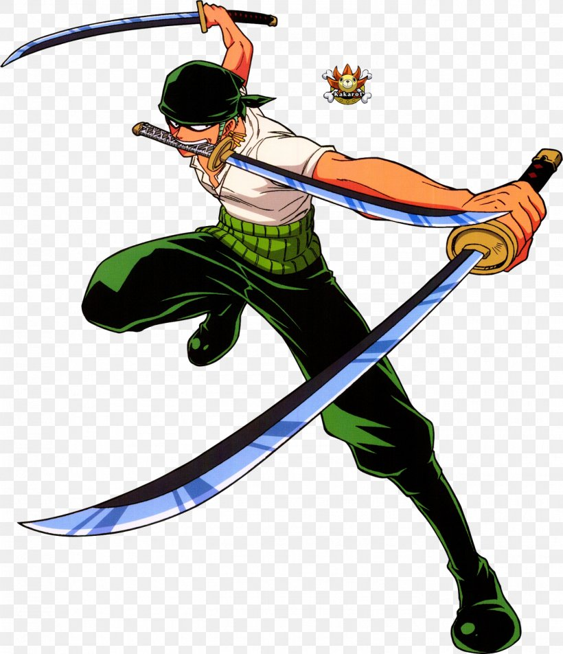
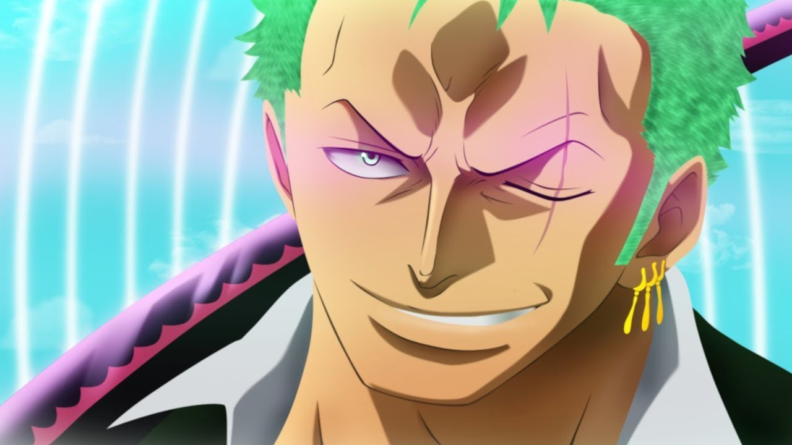
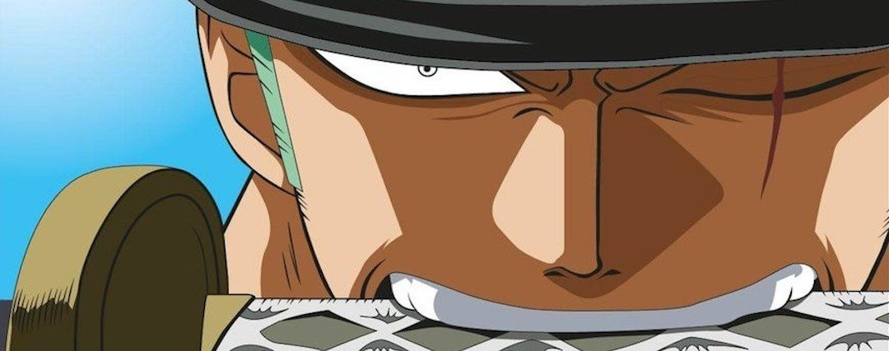
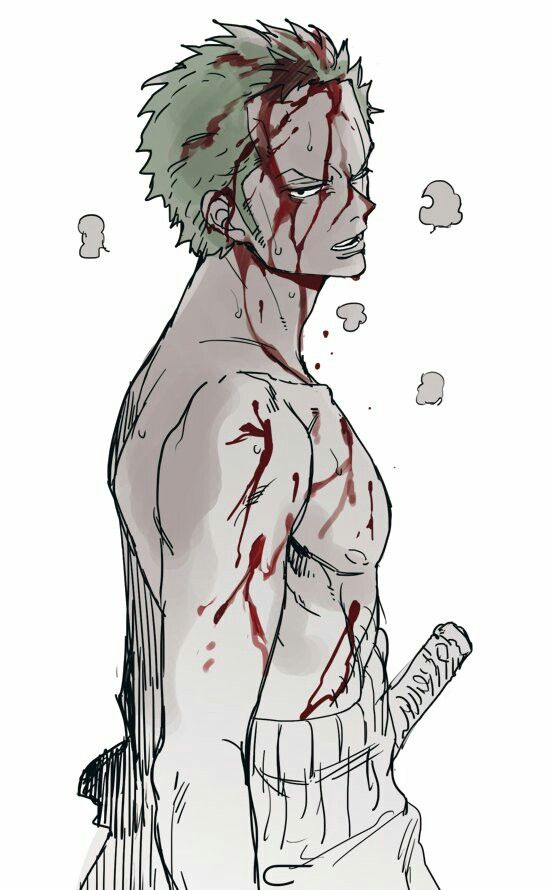
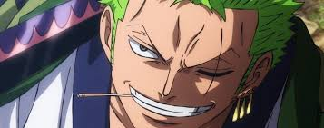
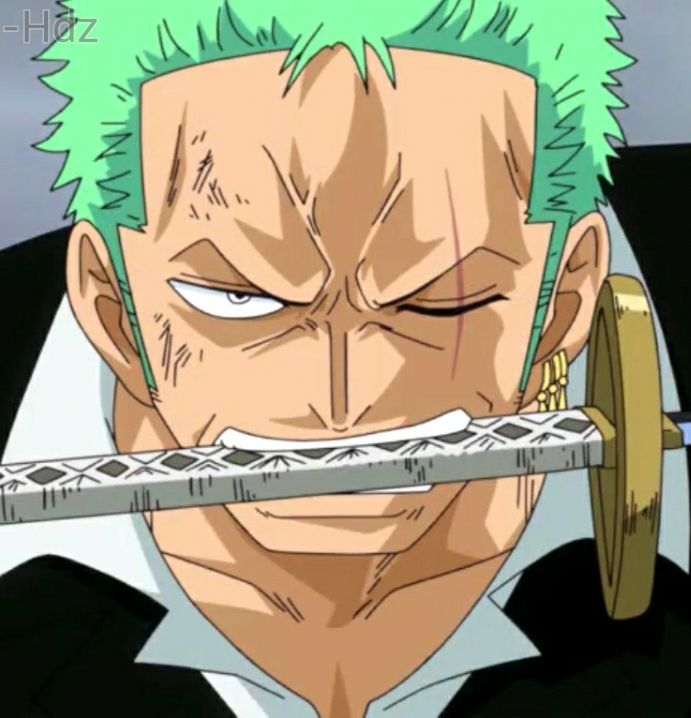

zoro


Roronoa Zoro (dans la version AB de l'anime) ou anciennement francise en Roronoa Zorro (dans la premiere version francaise du manga), est un epeiste dont l'ambition est de devenir le meilleur epeiste du monde, en s'aventurant sur grand line a la recherche du ONE PIECE, en compagnie de son capitaine et de l'equipage. C'est un epeiste de grand renom qui se bat avec trois sabres (ce style est appele en japonais Santoryu) qui fait partie de l'equipage de Chapeau de paille dirige par Monkey D. Luffy, le principal protagoniste de la serie.
Le personnage de Roronoa Zoro est librement inspiré du pirate François l'Olonnais1, considere comme l'un des pirates les plus cruels de son temps.


